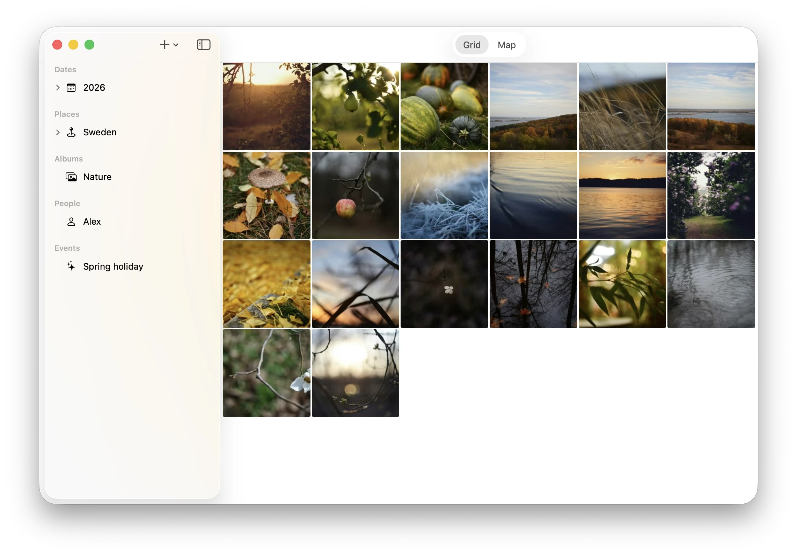
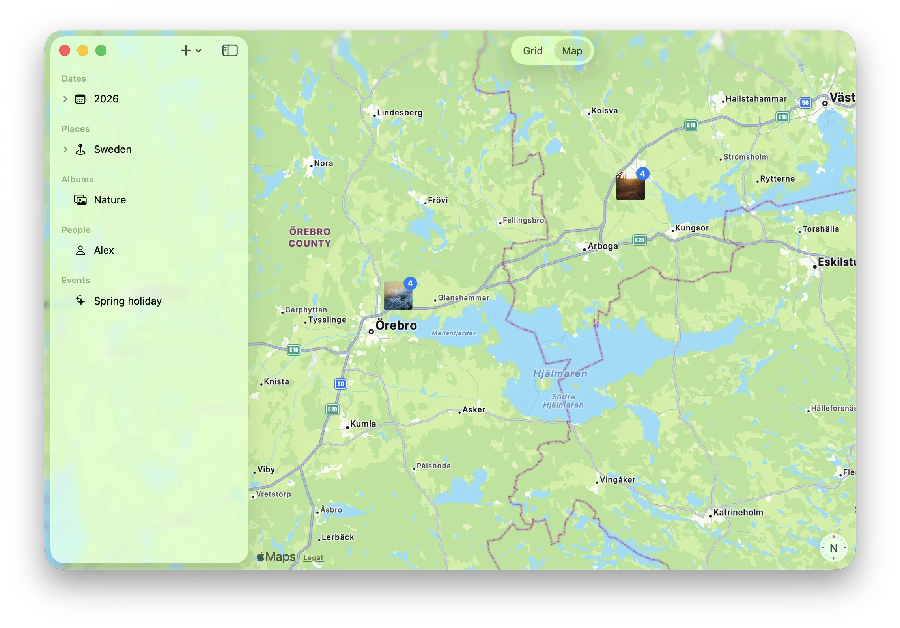
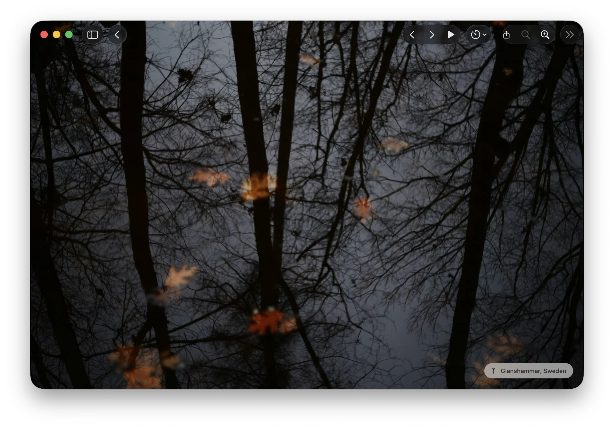

Grid, map, full-screen viewer — all pulling from the same library, all native, all fast. No loading spinner. No browser. No compromise.
The grid loads thumbnails the moment you open the app — no sync, no waiting for the cloud. Scroll through years of memories as fast as your finger moves. Filter by date, location, or event with a tap.

Switch from grid to map and your photos appear as pins on an Apple Maps canvas. Tap a cluster to zoom in — keep tapping and the map zooms until the pins separate. When you've narrowed it down far enough, tap the cluster one more time to see just those photos in the grid.

Open any photo into a full-screen viewer. The location is shown subtly in the corner — always present, never in the way. HDR and Live Photos are rendered natively, exactly as they appear in Photos.app.
